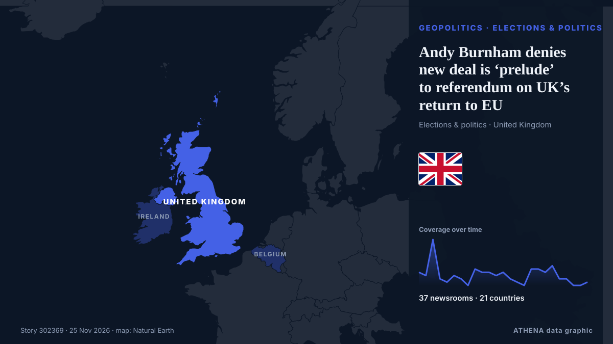

Andy Burnham denies new deal is ‘prelude’ to referendum on UK’s return to EU

Agreements were reached on food and agriculture exports, emissions trading and a youth experience scheme at last week’s Brussels summit. από The Irish News (Belfast)
Τι άλλαξε 22 νέες αναφορές από 18 μέσα τις τελευταίες 24 ώρες.
Δείτε τις πηγές ›Τεκμήριωση: Επαρκής
Αναφέρθηκε ανεξάρτητα από 37 μέσα σε 21 χώρες από τις 22 Νοε, πρώτο το Jamaica Observer· η κάλυψη εξασθενεί. Το ATHENA εκτιμά τον κίνδυνο αυξημένο (4.2/10), κυρίως λόγω της σοβαρότητάς του και της εμβέλειάς του. Βεβαιότητα 87% (υψηλή): το επιβεβαιώνουν 37 ανεξάρτητα μέσα, μέση αξιοπιστία 72%. Μέσα ανά χώρα: Ηνωμένο Βασίλειο (25), Τουρκία (2), Τζαμάικα (1). Κάλυψη: 22 Νοε έως 23 Νοε, 37 ώρες.
Τι άλλαξε: 22 νέες αναφορές από 18 μέσα στο 24ωρο έως 25 Νοε.
Πρώτη διατύπωση: A Brexit reset is not a return
ΑυτοματοποιημένοΕπιλέχθηκε, ομαδοποιήθηκε και βαθμολογήθηκε με τη δημοσιευμένη μέθοδο της ATHENA από 26 ανεξάρτητα μέσα. Ο τίτλος είναι του μέσου· οι προτάσεις της ATHENA ακολουθούν σταθερά πρότυπα - δεν τις γράφει παραγωγική ΤΝ. Πώς λειτουργεί →
Πώς να διαβάσετε αυτή τη σελίδα
- Τι διαβάζετε
- 37 μέσα σε 21 χώρες ανέφεραν αυτό το γεγονός. Οι αναφορές παρακάτω εμφανίζονται με τη σειρά που δημοσιεύτηκαν· κάθε τίτλος ανοίγει το αρχικό άρθρο. Το ATHENA δεν γράφει δικά του ρεπορτάζ.
- Η εκτίμησή μας
- Για την καταγραφή — Οι αναφορές περιγράφουν ένα ολοκληρωμένο, εσωτερικό, εμπορικό ή προσωπικό ζήτημα. Το καταγράφουμε ώστε να βλέπετε ποιος το ανέφερε και πότε. Δεν παρακολουθούμε εδώ κίνδυνο ευρύτερης σύγκρουσης.
- Πόσα στοιχεία υπάρχουν
- Επαρκής Αρκετά ανεξάρτητα μέσα συμφωνούν, αλλά η εικόνα μπορεί ακόμη να αλλάξει.
Αφού αφαιρεθούν οι επαναλήψεις, τα άσχετα και τα παλιά στοιχεία, υπολογίζονται 19 από τις 39 αναφορές που παρατίθενται· το 69% των τίτλων αντιστοιχεί στο γεγονός.
Περίπου το 42% των τίτλων είναι ανάλυση ή άποψη και όχι απλό ρεπορτάζ.
- Τι δεν σημαίνει
- Το ATHENA μετρά πώς καλύπτεται ένα γεγονός, όχι αν είναι αληθές. Δεν είναι πρόβλεψη, κρίση για το ποιος έχει δίκιο ή συμβουλή.
- Τι θα την άλλαζε
- Αναφορές από άλλα ανεξάρτητα μέσα που δείχνουν διαφορετική εξέλιξη, ή σαφής επιβεβαίωση ή διάψευση από επίσημη πηγή.
Εκτίμηση R2 · ανανεώνεται με κάθε ενημέρωση της σελίδας. Το ATHENA δεν έχει δημοσιεύσει ακόμη ιστορικό επιδόσεων για αυτές τις εκτιμήσεις· όταν το κάνει, θα συνδέεται εδώ.
Με μια ματιά
Επιλέγεται, βαθμολογείται και γράφεται από τη δημοσιευμένη μεθοδολογία του ATHENA. Κανένας συντάκτης δεν παρεμβαίνει σε μεμονωμένα γεγονότα. Πώς παράγεται ›
| 22 Nov 05:02 UTC | 4 |
|---|---|
| 22 Nov 08:02 UTC | 3 |
| 22 Nov 11:02 UTC | 14 |
| 22 Nov 14:02 UTC | 2 |
| 22 Nov 17:02 UTC | 1 |
| 22 Nov 20:02 UTC | 3 |
| 22 Nov 23:02 UTC | 2 |
| 23 Nov 02:02 UTC | 0 |
| 23 Nov 05:02 UTC | 5 |
| 23 Nov 08:02 UTC | 4 |
| 23 Nov 11:02 UTC | 4 |
| 23 Nov 14:02 UTC | 3 |
| 23 Nov 17:02 UTC | 4 |
| 23 Nov 20:02 UTC | 2 |
| 23 Nov 23:02 UTC | 1 |
| 24 Nov 02:02 UTC | 0 |
| 24 Nov 05:02 UTC | 5 |
| 24 Nov 08:02 UTC | 5 |
| 24 Nov 11:02 UTC | 4 |
| 24 Nov 14:02 UTC | 6 |
| 24 Nov 17:02 UTC | 2 |
| 24 Nov 20:02 UTC | 2 |
| 24 Nov 23:02 UTC | 0 |
| 25 Nov 02:02 UTC | 0 |
| 25 Nov 05:02 UTC | 1 |
| 24 Nov 08:51 UTC | 3.5 |
|---|---|
| 25 Nov 03:08 UTC | 4.3 |
| 25 Nov 06:05 UTC | 4.2 |
Γιατί αυτοί οι αριθμοί
Σημασία
Πόσο πολύ και πόσο εμφανώς αναφέρεται η είδηση.
Κίνδυνος
Τι περιγράφουν οι αναφορές, βαθμολογημένο για πιθανή ζημιά. Δεν είναι πρόβλεψη.
Βεβαιότητα
Πόσο καλά την στηρίζουν οι ανεξάρτητες πηγές.
Η κάλυψη — ποιος το ανέφερε και πότε
ο τίτλος όπως δημοσιεύτηκε · ανοίγει το πρωτότυπο- Jamaica Observer · ΤζαμάικαLead, Mia, lead!
- The Business Standard (Bangladesh) (working feed) · ΜπανγκλαντέςUK and EU agree post-Brexit reset deal to ease trade and boost cooperation
- Cyprus Mail · ΚύπροςA Brexit reset is not a return
- Egypt Independent · ΑίγυπτοςTen years on, is the UK preparing to undo Brexit?
- The Guardian · Ηνωμένο ΒασίλειοUK politics: Burnham should ‘move on’ from Brexit, says Theresa May, as critics hit out over closer EU ties – as it happened
- Guardian Environment · Ηνωμένο ΒασίλειοUK-EU food deal hailed by British firms: ‘We’re pretty aligned anyway’
- Guardian Business · Ηνωμένο ΒασίλειοThe looming UK winter may spawn a double headache for Andy Burnham | Richard Partington
- The Irish News (Belfast) · Ηνωμένο ΒασίλειοJust accept Brexit and move on, Theresa May urges Andy Burnham
- AzerNews · ΑζερμπαϊτζάνTheresa May tells PM: Brexit is done, move on
- The Guardian · Ηνωμένο ΒασίλειοTheresa May ‘aghast’ at Andy Burnham’s talk about rejoining EU
- The Herald (Scotland) · Ηνωμένο ΒασίλειοSt Andrews warns cutting EU students' fees in Brexit deal may hit Scots universities
- Asharq Al-Awsat (English) · Σαουδική ΑραβίαEx-UK PM Tells Successor to 'Move on' from Brexit
- The Guardian · Ηνωμένο ΒασίλειοCloser EU ties will give UK say on Brussels decisions, says Ed Miliband
- The Straits Times · ΣιγκαπούρηEx British PM Theresa May tells successor to ‘move on’ from Brexit
- TheJournal.ie · Ιρλανδία'Just accept Brexit and move on', former Conservative PM Theresa May urges Andy Burnham
- Nation.Cymru · Ηνωμένο ΒασίλειοTories and universities raise concerns over Burnham’s Brussels deal
- Free Malaysia Today · ΜαλαισίαEx-UK PM tells successor to ‘move on’ from Brexit
- Gulf News · Ηνωμένα Αραβικά ΕμιράταTheresa May urges Andy Burnham to move on from Brexit amid EU talks
- Nation.Cymru · Ηνωμένο ΒασίλειοJust accept Brexit and move on, Theresa May urges Andy Burnham
- Türkiye Today · ΤουρκίαFormer UK PM urges Andy Burnham to 'move on' from Brexit
- The Guardian · Ηνωμένο ΒασίλειοTheresa May’s blast from the past calls Tories back to their unhappy place | Peter Walker
- France 24 English · ΓαλλίαBurnham, 'Brejoin' & the Ghosts of Brexit
- Chronicle Live (Newcastle) · Ηνωμένο ΒασίλειοTheresa May urges Andy Burnham to 'accept Brexit and move on' amid UK EU relations debate
- Manchester Evening News · Ηνωμένο ΒασίλειοKemi Badenoch criticises Andy Burnham's ‘terrible’ EU deal as Nigel Farage warns of rejoin ‘disaster’
- Evening Standard (London) · Ηνωμένο ΒασίλειοBrexit battle explodes in London: Andy Burnham slaps down four Tory ex-PMs as he pushes EU deal
- Manchester Evening News · Ηνωμένο ΒασίλειοBurnham to say EU deal ‘taking pressure off cost of food’ in supermarket visit
- Evening Standard (London) · Ηνωμένο ΒασίλειοBurnham to say EU deal ‘taking pressure off cost of food’ in supermarket visit
- Evening Standard (London) · Ηνωμένο ΒασίλειοRishi Sunak warns against reopening ‘divisive’ Brexit debate
- Belfast Telegraph · Ηνωμένο ΒασίλειοRishi Sunak warns against reopening ‘divisive’ Brexit debate
- WalesOnline · Ηνωμένο ΒασίλειοAndy Burnham makes Monday announcement on new food price rule
- Yorkshire Post · Ηνωμένο ΒασίλειοAndy Burnham's 'good growth in every postcode' pledge looks like an unachievable fantasy: Jayne Dowle
- The Guardian · Ηνωμένο ΒασίλειοMonday briefing: What could Andy Burnham’s reset mean for the UK?
- Politico Europe · ΒέλγιοBadenoch and Farage: The battle for business
- Chronicle Live (Newcastle) · Ηνωμένο ΒασίλειοAndy Burnham to say EU deal 'taking pressure off cost of food' during Morrisons visit
- Anadolu Agency (English) · ΤουρκίαUK-EU deal: Substance, symbolism, and the politics of rejoining the EU
- Nation.Cymru · Ηνωμένο ΒασίλειοRishi Sunak warns against reopening ‘divisive’ Brexit debate
- Belfast Telegraph · Ηνωμένο ΒασίλειοBulldozing Irish Sea border posts will be test of latest Brexit deal – Allister
- Evening Standard (London) · Ηνωμένο ΒασίλειοBulldozing Irish Sea border posts will be test of latest Brexit deal – Allister
- The Irish News (Belfast) · Ηνωμένο ΒασίλειοAndy Burnham denies new deal is ‘prelude’ to referendum on UK’s return to EU